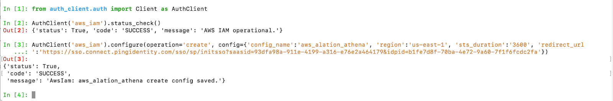

Compose SSO with Amazon Sources: Configure AWS IAM Plug-in¶
Applies from release 2021.1
To use SSO authentication for Amazon data sources, configure the AWS IAM plug-in of AuthService.
Note
This page describes how to configure the IAM plug-in on the backend of the Alation server. Starting with version 2022.3, the AWS IAM plug-in can be configured in the Alation user interface: Authentication Configuration Methods for External Systems.
Step 1: Collect Information from AWS and the IdP¶
You will need:
Your AWS region.
The
<config_name>value that you used when creating an authentication application for Alation in IdP.SSO login URL of the IdP that supports HTTP-REDIRECT Binding for the SSO SAML endpoint. This is the URL that will be used to initiate authentication from Alation. The SSO login URL can usually be found in the IdP metadata file of the authentication application.
Example of the SSO login URL from a metadata file from Okta:
<md:SingleSignOnService Binding="urn:oasis:names:tc:SAML:2.0:bindings:HTTP-Redirect" Location="https://myidp.okta.com/app/alationtest_awsstswithoktaauthframework_1/eomf7wv8fsqdzeEVX0h3/sso/saml"/>
Step 2: Enable AuthService¶
Note
Enabling of AuthService requires a redeployment of alation_conf and a restart of the Alation server. Alation recommends to schedule this configuration at a time when users are the least active in the Catalog. A redeployment of alation_conf and a restart will cause the Alation user interface to reload and users may lose their unsaved work.
From version 2022.2, AuthService is enabled by default. In versions before 2022.2, perform the following configuration on the Alation server to enable AuthService:
Use SSH to connect to your Alation host.
Enter the Alation shell.
sudo /etc/init.d/alation shell
Check if the AuthService is enabled on your instance by checking the current value of the alation_conf parameter
alation.authentication.service.enabled.alation_conf alation.authentication.service.enabledIf the current value is
True, the AuthService is already enabled. If it’sFalse, then change the value toTrue.Set the value to
True.alation_conf alation.authentication.service.enabled -s True
Deploy the configuration.
alation_action deploy_conf_allRestart Alation.
alation_action restart_alation
Step 3: Write the Code for the IAM Configuration Object¶
AuthService uses plug-ins to route authentication requests from Alation to external authentication systems. A plug-in consumes configuration objects that are created by an admin in the Alation Django shell.
SSO authentication to Amazon data sources goes through the built-in AWS IAM plug-in of AuthService.
This section explains how to write the Python code required for configuring the AWS IAM plug-in to work with an external IdP provider integrated with AWS. You will need to provide your AWS region, the SSO login URL, and the <config_name> value:
In an editor of your choice to write the required code using the following pattern:
AuthClient('<method_name>').configure(operation='<operation>', config={'config_name':'<your_value>', 'region':'<your_value>', 'sts_duration':'<your_value>', 'redirect_url':'<your_value>'})
Where:
Parameter |
Description |
Supported Values |
|---|---|---|
method_name |
Identifier for a specific Authentication plug-in
that is going to work with your data sources.
Use the value |
‘aws_iam’ |
operation |
A CRUD operation that should be performed on the configuration object. To create a configuration object, use |
Can be either of the following values:
|
config |
A dictionary containing configuration values. |
Supported Keys:
|
config_name |
Name of the configuration object. The name will be used to retrieve, delete, or modify this object. |
A string value Provide the value of the
|
region |
Region to be used by the AWS IAM plug-in to determine the service endpoint and signing region for API requests. |
Example:
|
sts_duration |
Duration (in seconds) to generate the temporary authorization. The temporary credentials generated by AWS STS service will last this number of seconds. You can provide a value from 900 seconds (15 min) up to the maximum of 43200 seconds (12 hours). |
Example:
|
redirect_url |
The SSO login URL of the IdP that supports HTTP-Redirect Binding. This is the URL to which Alation users will be redirected for authentication. |
The SSO login URL can usually be obtained from the authentication application settings of of the IdP metadata file of the authentication application. |
Example¶
AuthClient('aws_iam').configure(operation='create', config={'config_name':'aws_alation_athena', 'region':'us-east-1', 'sts_duration':'3600', 'redirect_url':'https://sso.connect.pingidentity.com/sso/sp/initsso?saasid=93dfa98a-911e-4199-a316-e76e2a464179&idpid=b1fe7d8f-70ba-4e72-9a60-7f1f6fcdc2fa'})
This code will be used to create a configuration object with the name = config_name in the AWS IAM plug-in of AuthService.
Step 4: Configure the AWS IAM Plug-in of AuthService¶
Use the code you have written in Step 3 to create the configuration object in the AWS IAM plug-in:
From the Alation shell, enter the Alation Django shell:
alation_django_shell
Call the AuthService client:
from auth_client.auth import Client as AuthClient
Check the status of the AWS IAM plug-in of AuthService using the command below. It should return the status operational:
AuthClient('aws_iam').status_check()
Paste the Python code you have written in Step 3 to create your configuration object and press Enter:
To validate that the configuration object has been created, you can retrieve it with the
readoperation:AuthClient('aws_iam').configure(operation='read', config={'config_name':'your_value'})
Note
Each AuthService configuration object is stored as a JSON object at /opt/alation/site/config/authserver inside the Alation shell. The name of the .json file uses the
config_namevalue. You can check this location to view the list of all AuthService configuration objects that currently exist on the instance.Save the
config_namevalue as you will need it next for the data source configuration in Alation.You can stay in the Django shell if you are going to continue configuring specific Amazon data sources to use SSO from Compose and the catalog:
Note
To exit the Django shell:
exitTo exit the Alation shell:
exit